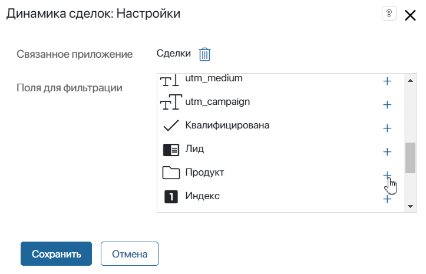
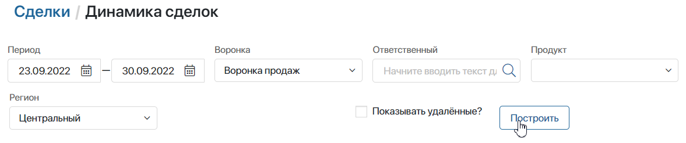
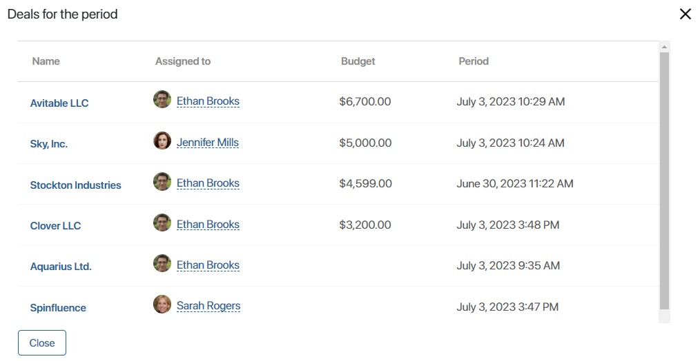
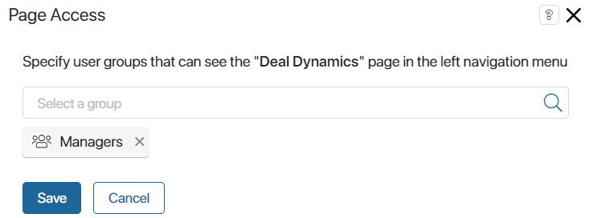

The Deal Dynamics report shows how the statuses of deals assigned to a specific employee in a selected pipeline changed over a period of time.

To make a report, do the following:
- Go to the CRM workspace and open the Deal Dynamics page.
- Specify:
- The period of the report.
- The pipeline.
- The employee responsible for the deals in the selected pipeline. If you leave the Assigned to field empty, the repost will include information about all sales reps.
- You can add other fields from the context of the Deals app.
- To include deleted deals in the report, check the Show deleted? box.
- Click Show.
How to add other fields into the report
You can add other fields to filter information for the report using properties from the Deals app’s context. To do that:
- Make sure that the Search and sort by field option is enabled for the properties you want to add.
- Open the Deal Dynamics report and click the gear icon next to its name. In the menu, select Edit. Add new fields for filtering.
This allows you to use the selected data in the report, apart from the period, the pipeline, and the responsible employee.
Consider the following example. Let’s say you added the Product and Region field to the deal page. If you want to see a report on deals filtered by a certain product or region, do the following:
- In the context of the Deals app, enable the Search and sort by field option for the Product and Region fields.
- Open the Deal Dynamics page and click the gear icon next to its name. In the menu, click Edit and select the additional fields.

Now you can see the Product and Region fields on the report’s page. If you specify data as shown below, only the deals created from 06/29/2023 to 07/06/2023 in the Stock Sales pipeline in the Central region will be included in the report.

How to read the report
The names of rows and columns in the report correspond with the stages of the selected pipeline. Rows’ names show stages that deals were in at the beginning of the period, while columns’ names show stages they were in at the end of the period. The deal dynamics in the report are represented by the cells’ colors.
The white cell shows the total amount of deals added to the sales pipeline during the specified period. Moreover, it includes deals that were moved between this pipeline and other pipelines during the period. Lost deals are not displayed here.
On the green background, you can see the number of deals with positive dynamics, that is, the ones that have gotten closer to completion in a selected period of time.
On the light-red background, you can see the number of deals with negative dynamics, that is, those that have returned to one of the previous stages.
Diagonally placed cells with the yellow background show the number of deals without dynamics.
The grey cell shows the total amount of deals for a selected period of time.
If you click one of the numbers in the report, you will see detailed information about each deal in the stage.

To go to a deal’s page, click on its name.
Report visibility
You can restrict access to the Deal Dynamics report. To do that, configure its visibility. Click on the  icon to the right of the page’s name and select Page Access.
icon to the right of the page’s name and select Page Access.
In the window that opens, specify user groups, for example, Managers. Only these users will see Deal Dynamics in the left menu of the CRM workspace.

Found a typo? Select it and press Ctrl+Enter to send us feedback